Information on RFC 6455 » RFC Editor (rfc-editor.org)
简介
RFC文档中的描述The WebSocket Protocol is designed to supersede existing bidirectional communication technologies that use HTTP as a transport layer to benefit from existing infrastructure (proxies, filtering, authentication). WebSocket协议旨在取代使用HTTP作为传输层的现有双向通信技术，以从现有基础架构 (代理，过滤，身份验证) 中受益。The WebSocket Protocol attempts to address the goals of existing bidirectional HTTP technologies in the context of the existing HTTP infrastructure; as such, it is designed to work over HTTP ports 80 and 443 as well as to support HTTP proxies and intermediaries, even if this implies some complexity specific to the current environment. WebSocket协议试图明确目标为：在现有HTTP基础结构的上下文中现有的双向HTTP技术; 因此，它被设计为在HTTP端口80和443上工作，以及支持HTTP代理和中介，即使这意味着特定于当前环境的一些复杂性。However, the design does not limit WebSocket to HTTP, and future implementations could use a simpler handshake over a dedicated port without reinventing the entire protocol 但是，该设计不会将WebSocket限制为HTTP，并且将来的实现可以在专用端口上使用更简单的握手，而无需重新设计整个协议。
出现背景
- 需求：客户端和服务端期望能双向通信，例如一个IM应用，C1 → S ← C2，客户端都和服务端沟通，非P2P模式，服务端收到C1发送消息，讲消息发送给Chat中的其他chatter即C2，就需要一个服务端随时能想客户端发送消息的能力但是HTTP设计为一个Request对应一个Response，没有客户端的Request，服务端就不能给C1发一个Response。
- 比较Hack的解决方式：HTTP轮询：做法：C1发送Request，服务端Hold住这个请求，一直不发送Response，直到有人发消息：即C2发消息再发送Response，然后C1收到Response → 处理结果 → 再发起一个请求 ...缺陷：
- TCP连接增加：一部分建立的TCP连接用来接收消息（即C2给服务端发送消息），另一部分用来发送消息（即Hold住的C1的Request），简单的看是原本一个客户端对应一个TCP连接就能实现收发消息，现在变成了2个TCP连接。
- HTTP开销大：HTTP头部数据量多，见下文对比
... - 基于此，出现了WebSocket初衷是既想利用现有的HTTP的基础服务（代理proxies, 过滤filtering, 身份验证authentication），又想实现双向通信。
protocal two part- handshake
GET /chat HTTP/1.1
Host: server.example.com
Upgrade: websocket
Connection: Upgrade
Sec-WebSocket-Key: dGhlIHNhbXBsZSBub25jZQ==
Origin: http://example.com
Sec-WebSocket-Protocol: chat, superchat
Sec-WebSocket-Version: 13
websocket handshake # client -> server 解释- is a Upgrade request
The opening handshake is intended to be compatible with HTTP-based server-side software and intermediaries, so that a single port can be used by both HTTP clients talking to that server and WebSocket clients talking to that server. To this end, the WebSocket client's handshake is an HTTP Upgrade request:
开始握手旨在与基于HTTP的服务器端软件和中介兼容，以便与该服务器对话的HTTP客户端和与该服务器对话的WebSocket客户端都可以使用同一个端口。为此，WebSocket客户端的握手是一个HTTP升级请求。
Start Line # Request Line GET /chat HTTP/1.1 纯文本代码块 Headers Upgrade: websocket 共同作用，表示transitioning from HTTP/1.1 to some other protocol on the same connection.
Connection: Upgrade
Sec-WebSocket-Key: dGhlIHNhbXBsZSBub25jZQ== Server: To prove to the client that the handshake was received
The WebSocket Protocol is an independent TCP-based protocol. Its only relationship to HTTP is that its handshake is interpreted by HTTP servers as an Upgrade request.
WebSocket协议是一个独立的基于TCP的协议。它与HTTP的唯一关系是它的握手被HTTP服务器解释为升级请求。
HTTP/1.1 101 Switching Protocols
Upgrade: websocket
Connection: Upgrade
Sec-WebSocket-Accept: s3pPLMBiTxaQ9kYGzzhZRbK+xOo=
Sec-WebSocket-Protocol: chat
websocket handshake # server -> client 解释Start Line # Status Line HTTP/1.1 101 Switching Protocols status code 101 (101:apply other: not apply)
Headers Sec-WebSocket-Accept: s3pPLMBiTxaQ9kYGzzhZRbK+xOo= 服务端对Sec-WebSocket-Key处理后的结果，客户端可对其进行验证（作为简单且易伪造的验证） For this header field, the server has to take the value (as present in the header field, e.g., the base64-encoded [RFC4648] version minus any leading and trailing whitespace) and concatenate this with the Globally Unique Identifier (GUID, [RFC4122]) "258EAFA5-E914-47DA- 95CA-C5AB0DC85B11" in string form, which is unlikely to be used by network endpoints that do not understand the WebSocket Protocol. A SHA-1 hash (160 bits) [FIPS.180-3], base64-encoded (see Section 4 of [RFC4648]), of this concatenation is then returned in the server's handshake.
对于此标头字段，服务器必须采用该值 (如标头字段中所示，例如，base64-encoded [RFC4648] 版本减去任何前导和尾随空格)，并将其与字符串形式的全局唯一标识符 (GUID，[RFC4122]) “258eafa5-e914-47da-95ca-c5ab0dc85b11” 连接，不太可能被不了解WebSocket协议的网络端点使用。然后在服务器的握手中返回该串联的SHA-1散列 (160位) [FIPS.180-3]，base64-encoded (请参阅 [RFC4648] 的第4节)。
- data transfer
GET /chat HTTP/1.1 Host: server.example.com Upgrade: websocket Connection: Upgrade Sec-WebSocket-Key: dGhlIHNhbXBsZSBub25jZQ== Origin: http://example.com Sec-WebSocket-Protocol: chat, superchat Sec-WebSocket-Version: 13
解释
- is a Upgrade request
The opening handshake is intended to be compatible with HTTP-based server-side software and intermediaries, so that a single port can be used by both HTTP clients talking to that server and WebSocket clients talking to that server. To this end, the WebSocket client's handshake is an HTTP Upgrade request: 开始握手旨在与基于HTTP的服务器端软件和中介兼容，以便与该服务器对话的HTTP客户端和与该服务器对话的WebSocket客户端都可以使用同一个端口。为此，WebSocket客户端的握手是一个HTTP升级请求。
Start Line # Request Line GET /chat HTTP/1.1 纯文本代码块 Headers Upgrade: websocket 共同作用，表示transitioning from HTTP/1.1 to some other protocol on the same connection. Connection: Upgrade Sec-WebSocket-Key: dGhlIHNhbXBsZSBub25jZQ== Server: To prove to the client that the handshake was received The WebSocket Protocol is an independent TCP-based protocol. Its only relationship to HTTP is that its handshake is interpreted by HTTP servers as an Upgrade request. WebSocket协议是一个独立的基于TCP的协议。它与HTTP的唯一关系是它的握手被HTTP服务器解释为升级请求。
HTTP/1.1 101 Switching Protocols Upgrade: websocket Connection: Upgrade Sec-WebSocket-Accept: s3pPLMBiTxaQ9kYGzzhZRbK+xOo= Sec-WebSocket-Protocol: chat
解释
Start Line # Status Line HTTP/1.1 101 Switching Protocols status code 101 (101:apply other: not apply) Headers Sec-WebSocket-Accept: s3pPLMBiTxaQ9kYGzzhZRbK+xOo= 服务端对Sec-WebSocket-Key处理后的结果，客户端可对其进行验证（作为简单且易伪造的验证） For this header field, the server has to take the value (as present in the header field, e.g., the base64-encoded [RFC4648] version minus any leading and trailing whitespace) and concatenate this with the Globally Unique Identifier (GUID, [RFC4122]) "258EAFA5-E914-47DA- 95CA-C5AB0DC85B11" in string form, which is unlikely to be used by network endpoints that do not understand the WebSocket Protocol. A SHA-1 hash (160 bits) [FIPS.180-3], base64-encoded (see Section 4 of [RFC4648]), of this concatenation is then returned in the server's handshake. 对于此标头字段，服务器必须采用该值 (如标头字段中所示，例如，base64-encoded [RFC4648] 版本减去任何前导和尾随空格)，并将其与字符串形式的全局唯一标识符 (GUID，[RFC4122]) “258eafa5-e914-47da-95ca-c5ab0dc85b11” 连接，不太可能被不了解WebSocket协议的网络端点使用。然后在服务器的握手中返回该串联的SHA-1散列 (160位) [FIPS.180-3]，base64-encoded (请参阅 [RFC4648] 的第4节)。
WebSocket URIs
ws-URI = "ws:" "//" host [ ":" port ] path [ "?" query ] wss-URI = "wss:" "//" host [ ":" port ] path [ "?" query ] // ws + SSL/TLS host = <host, defined in [RFC3986], Section 3.2.2> port = <port, defined in [RFC3986], Section 3.2.3> path = <path-abempty, defined in [RFC3986], Section 3.3> query = <query, defined in [RFC3986], Section 3.4>
Base Framing Protocal (基础帧协议)
0 1 2 3 0 1 2 3 4 5 6 7 0 1 2 3 4 5 6 7 0 1 2 3 4 5 6 7 0 1 2 3 4 5 6 7 +-+-+-+-+-------+-+-------------+-------------------------------+ |F|R|R|R| opcode|M| Payload len | Extended payload length | |I|S|S|S| (4) |A| (7) | (16/64) | |N|V|V|V| |S| | (if payload len==126/127) | | |1|2|3| |K| | | +-+-+-+-+-------+-+-------------+ - - - - - - - - - - - - - - - + | Extended payload length continued, if payload len == 127 | + - - - - - - - - - - - - - - - +-------------------------------+ | |Masking-key, if MASK set to 1 | +-------------------------------+-------------------------------+ | Masking-key (continued) | Payload Data | +-------------------------------- - - - - - - - - - - - - - - - + : Payload Data continued ... : + - - - - - - - - - - - - - - - - - - - - - - - - - - - - - - - + | Payload Data continued ... | +---------------------------------------------------------------+
- FIN：表示是否是消息（message）的最后一个片段（fragment）
- RSV：默认没用
- opcode：定义“负载数据（payload data）”的解释
- %x0 denotes a continuation frame （持续帧）
- %x1 denotes a text frame （文本帧）
- %x2 denotes a binary frame （二进制帧）
- %x3-7 are reserved for further non-control frames （预留给以后的非控制帧）
- %x8 denotes a connection close （连接关闭）
- %x9 denotes a ping （ping包）
- %xA denotes a pong （pong包）
- %xB-F are reserved for further control frames （预留给以后的控制帧）
- MASK：client → server必须为1,b表示“负载数据”使用掩码，见Masking-key：
- Payload lenif ( 0 ≤ len ≤ 125)payload len解释为payload长度
0 1 2 3 0 1 2 3 4 5 6 7 0 1 2 3 4 5 6 7 0 1 2 3 4 5 6 7 0 1 2 3 4 5 6 7 +-+-+-+-+-------+-+-------------+-------------------------------+ |F|R|R|R| opcode|M| Payload len | Masking-key, | |I|S|S|S| (4) |A| (7) | if MASK set to 1 | |N|V|V|V| |S| | | | |1|2|3| |K| | | +-------------------------------+-------------------------------+ ......if ( len == 126)16bit的extended payload length解释为payload长度0 1 2 3 0 1 2 3 4 5 6 7 8 9 0 1 2 3 4 5 6 7 8 9 0 1 2 3 4 5 6 7 8 9 0 1 +-+-+-+-+-------+-+-------------+-------------------------------+ |F|R|R|R| opcode|M| Payload len | Extended payload length | |I|S|S|S| (4) |A| (7) | (16) | |N|V|V|V| |S| | | | |1|2|3| |K| | | +-+-+-+-+-------+-+-------------+-------------------------------+ | Masking-key, if MASK set to 1 | ...... | +-------------------------------+-------------------------------+if ( len == 127)64bit的extended payload length解释为payload长度0 1 2 3 0 1 2 3 4 5 6 7 0 1 2 3 4 5 6 7 0 1 2 3 4 5 6 7 0 1 2 3 4 5 6 7 +-+-+-+-+-------+-+-------------+-------------------------------+ |F|R|R|R| opcode|M| Payload len | Extended payload length | |I|S|S|S| (4) |A| (7) | (16) | |N|V|V|V| |S| | | | |1|2|3| |K| | | +-+-+-+-+-------+-+-------------+-------------------------------+ | Extended payload length continued (32) | +-------------------------------+-------------------------------+ | Extended payload length |Masking-key, if MASK set to 1 | | continued (16) | | +-------------------------------+-------------------------------+最多64bit，其中63bit用来表示长度，即最2^63 byte（为 8388608 TB），frame大小可以认为没有限制，实际使用中 websocket 消息长度限制取决于具体的实现。
- Masking-key：
+-------------------------------+-------------------------------+ | Extended payload length |Masking-key, if MASK set to 1 | | continued (16) | | +-------------------------------+-------------------------------+ | Masking-key (continued) | Payload Data | +-------------------------------- - - - - - - - - - - - - - - - + : Payload Data continued ... :数据帧（frame）与此32bit进行了运算 - PayloadData= Extension data（扩展数据）+ Application data（应用数据）Extension data默认为0byte
Fragmentation（消息分片）
实现机制：
- 若message不分片：一片：FIN=1，opcode ≠ %x0
- 若message分片：第一片：FIN=0，opcode ≠ %x0随后的片：FIN=0，opcode == %x0最后一片：FIN=1，opcode == %x0
- 机制问题：无法并发发送分片（frame），只能串行，因为并发的话分片可能是无序到达的，接收方无法按顺序拼接为message，所以需要WebSocket的扩展机制实现并发，这里不深入讨论。
- “分片”概念
数据： 46（使用的情况下简单表格64B-其他部分） ~1500（）8B ( 6+6+2 )B 20B~60B 头部：20B~60B 4B 前导码 头 头 data FCS - 为什么要分片
- 为什么IP数据报已经有分片机制了，还要分片—— segmentation（分段）
- 为什么TCP已经可以分片了，WebSocket还要分片
- message未知大小
- 可以多路复用，
- 发送1GB的文件的同时，可以穿插发送一个1kB的文件
- 传输数据过程中可以插入控制帧，比如PING确认对方存活，CLOSE关闭连接
WebSocket和Socket
实例分析
- 抓包
- 原文件⬆️ filter填入
ip.addr == 192.168.0.109 - 在线预览⬆️ filter填入
ip.addr == 192.168.0.109 - wireshark截图
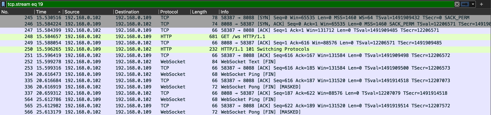
- 原文件
192.168.0.102：客户端，下文用C表示
192.168.0.109：服务单，下文用S表示
表格不支持添加图片，在这个块下放图片，然后在表格中应用
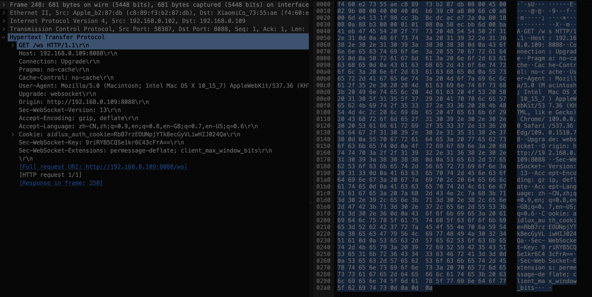
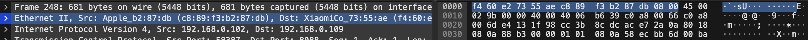
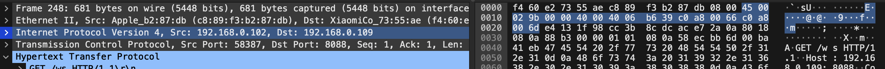
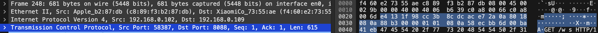
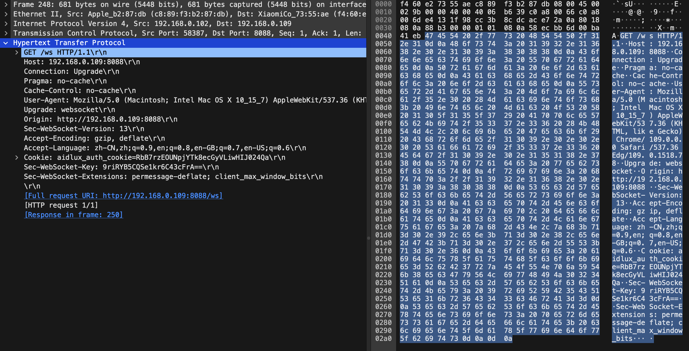
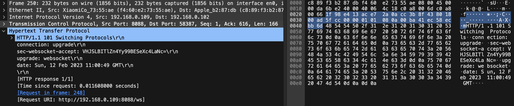
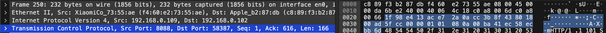
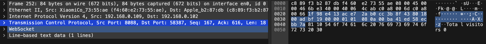
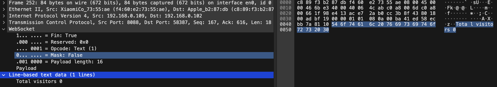
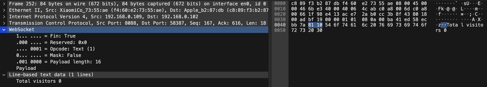
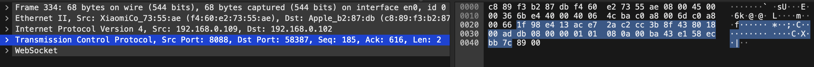
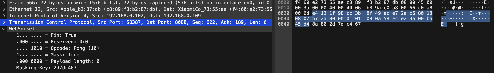